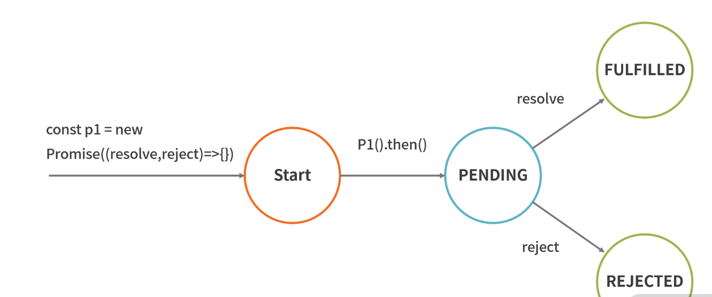

只针对自己不太熟或者面试常问的有针对性的整理
数据类型和检测方式 Symbol Symbol是ES6新出的数据结构
定义：Symbol("key")
特点： 每次Symbol('key')都会生成一个唯一的值
获取：Symbol.for('key')，会先检查给定的key是否已经存在，如果不存在才会新建一个值
1 2 3 let s1 = Symbol .for('foo' );let s2 = Symbol .for('foo' );s1 === s2
typeof typeof注意点：只能检测原始类型(除了null)，不能检测引用类型(均为"object")null比较特殊，为000000, 对象存在在计算机中，都是以000开始的二进制存储，所以检测出来的结果是对象
1 typeof null === "object"
instanceof a instanceof b就是在a原型链上找是否有b的原型，找到位true, 否则为false
手写instanceof 1 2 3 4 5 6 7 8 9 10 11 function myInstanceof (left, right ) let node = left.__proto__ let protoType = right.protoType while (node){ if (node === protoType){ return true } node = node.__proto__ } return false }
数据转换 对象转换规则
调用[[Symbol.toPrimitive]]
调用valueOf()
调用toString()
如果都没有返回基础类型，会报错。
隐式类型转换(==) 个人总结规则：
同类型不转换 不同类型 ，一方为string/number, 另一方试图转换为number, 如果是对象，那么遵守上面的对象转换规则 如果一方是null/undefined, 另一方必须是null/undefined, 否则为false
1 2 3 4 5 6 7 8 9 var a = { value: 0 , valueOf: function ( this .value++; return this .value; } }; console .log(a == 1 && a == 2 && a ==3 );
this指针 指向问题
谁调用它，this指向谁
箭头函数的this指向箭头函数上层第一个普通函数的this
new关键字调用的构造函数的this始终指向创建出来的实例
apply, bind, call可以改变this指针的指向，指向传递进去的第一个对象。注意：构造函数无法修改指针指向
new相关 new关键字执行以下几个步骤
以构造函数的原型作为原型创建一个对象
将构造函数内部的this指向创建出来的对象，并调用构造函数
如果有返回值并且返回值为对象，那么返回， 否则将新创建出来的实例对象返回
手写bind和apply 1 2 3 4 5 6 7 8 9 10 11 12 13 14 15 16 17 18 19 20 21 22 23 24 25 26 function bind (context, ...rest ) if (context === undefined ) return this ; if (!(context instanceof Object )) return { throw new Error ("上下文必须是对象" ) } const _this = this ; return F(){ if (this instanceof F){ return new _this(...rest) } return F.apply(context, rest) } } function apply (context, ...rest ) let fn = this ; const symbol = Symbol ("fn" ) context[symbol] = fn const res = context.fn(...rest); delete context[symbol] return res }
作用域相关 ES5有全局作用域和 函数作用域，ES6新增 块级作用域
这里要注意let,const,var，暂时性死区、变量提升相关，不再赘述
上下文
编译阶段 上下文已经形成
上下文中包括变量对象VO 、作用域链 、this 指针的指向
作用域链保存在作用域[[Scopes]]属性中，即全局作用域就挂在window对象上，函数作用域保存在函数对象上
闭包 定义：外部函数能够访问内部函数定义的变量
本质：当前环境存在指向父级作用域的引用(全局作用域就是本身)
这里分类讨论：
在函数作用域下的闭包
1 2 3 4 5 6 7 8 9 10 11 12 13 14 15 16 17 18 19 20 21 22 function a ( var x = 1 function b ( console .log(x) } return b } var f = a()console .dir(f)
在全局作用域下的闭包
注意：可能有些人以为以下不是闭包，问题在于如下当前环境是否有指向父级作用域的变量(有！全局作用域的父级是本身)
1 2 3 4 5 6 7 8 9 10 11 12 13 14 15 16 17 var x = 1 function b ( console .log(x) } console .dir(b)
补充说明 全局作用域下 let const定义的变量比较特殊，在[[Scopes]]上的表现和其他不太一样，会单独定义一个对象Script, 存在那个上面
1 2 3 4 5 6 7 8 9 10 11 12 13 14 15 16 17 let a = 1 ;function fn ( console .log(a) }
原型和原型链 一张图解释
模块化 CommonJS require导入，module.exports导出
module.exports指向exports
导出的都是值拷贝, 即导出后，导入值改变不会影响已经导出的值
import和export import 导入 export 导出
需要babel转换
导出的都是引用拷贝, 即导出后，导入值改变会影响已经导出的值
CMD和AMD CMD和AMD用的比较少了，两者都是用来解决异步加载的问题
CMD是就近依赖，AMD是依赖前置依赖模块的执行实际，AMD已下载就执行(即'./a', './b'), CMD是需要的时候再执行。1 2 3 4 5 6 7 8 9 10 11 12 13 14 15 16 17 18 define(function (require, exports, module ) var a = require ("./a" ); a.doSomething(); var b = require ("./b" ); b.doSomething(); }); define(["./a" , "./b" ], function (a, b ) a.doSomething(); b.doSomething(); })
1 2 3 4 5 6 7 8 9 10 11 12 13 14 15 16 17 18 19 20 21 22 23 24 25 26 27 28 const isComplexStruct = obj =>typeof obj === 'object' || typeof obj === 'function' ) && obj !== null var deepClone = (obj, hash = new WeakMap ( )) => { if (obj.constructor === Date ){ return new Date (obj) } if (obj.constructor === RegExp ){ return new RegExp (obj) } if (hash.has(obj)){ return hash.get(obj) } const allDes = Object .getOwnPropertyDescriptors(obj) const cloneObj = Object .create(Object .getPrototypeOf(obj), allDes) hash.set(obj, cloneObj) for (var key of Reflect .ownkeys(ownKeys)){ cloneObj[key] = isComplexStruct(obj) ? deepClone(obj[key], hash) : obj[key] } return cloneObj; }
1 2 3 4 5 6 7 8 9 10 11 12 13 14 15 16 17 18 19 20 21 22 23 24 function debounce (fn, wait ) var timer = null ; return (...rest ) => { if (timer){ clearTimeout(timer) timer = null } timer = setTimeout(() => fn(...rest) }, wait); } } function throttle (fn, delay ) var preTime = Date .now() return (...rest ) => { var nowTime = Date .now() if (nowTime - preTime >= delay){ preTime = Date .now() return fn(...rest) } } }
Iterator 本质上是个接口，只要部署了Symbol.iterator的数据结构都是被认为是可遍历的，遍历的时候反复调用next方法
这个接口需要返回一个对象，如下：
1 2 3 4 5 6 7 8 { next(){ return { value: xxx, done: false , } } }
Promise
解决异步编程的痛点(回调地狱)
一旦状态改变了就不会改回来
Promise调用是同步的，.then是异步的, 个人理解是创建.then返回的Promise状态这个过程是异步的

手写Promise 以下写一个简易版本, 注意点如下:
Promise本身是同步的, 传入的函数需要同步调用
resolveCallback, rejectCallback的回调数组是为了处理异步情况
1 2 3 4 5 6 7 8 9 10 11 12 13 14 15 16 17 18 19 20 21 22 23 24 25 26 27 28 29 30 31 32 33 34 35 36 37 38 39 40 41 42 43 44 45 46 47 48 49 50 class MyPromise constructor (fn){ this .value = null ; this .reason = null ; this .status = 'pending' this .onResolve = this .onResolve.bind(this ); this .onReject = this .onReject.bind(this ); this .resolveCallback = []; this .rejectCallback = []; fn(this .onResolve, this .onReject) } onResolve(val){ if (this .pending === 'pending' ){ this .pending = 'fulfilled' this .value = val } while (this .resolveCallback.length){ this .resolveCallback.shift()(this .value) } } onReject(reason){ if (this .pending === 'pending' ){ this .pending = 'reject' this .reason = reason } while (this .rejectCallback.length){ this .rejectCallback.shift()(this .reason) } } } MyPromise.protoType.then = (onResolve, onReject ) => { return new MyPromise(() => if (this .pending === 'fulfilled' ){ onResolve(this .value) } if (this .pending === 'reject' ){ onReject(this .reason) } if (this .pending === 'pending' ){ this .resolveCallback.push(onResolve) this .rejectCallback.push(onReject) } }) }
async/await 可以认为是Promise的语法糖，也可以认为是Generator的语法糖
注意点：
没法处理并发的过程(需要Promise.all)
注意以下代码
a = a + 10这个a尤其要注意b调用的时候是0，而不是1，只有遇到await才会开启协程与主线程合作。
1 2 3 4 5 6 7 8 9 10 var a = 0 var b = async () => { a = a + await 10 console .log('2' , a) a = (await 10 ) + a console .log('3' , a) } b() a++ console .log('1' , a)
事件循环 以下不区分node环境还是浏览器环境
微任务：Promise.then MutationObserver process.nextTick Object.observe
宏任务队列：setTimeout setInterval 读写I/O setImmediate UI渲染
js线程与GUI互斥，可以使用requestAnimationFrame把这两件事情给关联起来, 这个 API 保证在下次浏览器渲染之前 一定会被调用, 这个是浏览器自己去调节的
浏览器的事件循环 主线程 -> 推入事件表, 注册回调函数（Event Table） -> 主线程执行完毕 -> 微任务队列 -> GUI渲染 -> 宏任务队列(满足条件的执行回调) -> 宏任务对应的微任务
node的事件循环
以上各阶段注意点：
timer 阶段处理setTimeout setInterval等宏任务
poll 阶段处理读写I/O
check 阶段处理setImmediate
setTimeout(() => { console.log('setTimeout');}, 0);和setImmediate到底谁先执行
设置为0， 默认为1ms
如果进入eventLoop都不到1ms, 那么触发了回调的条件，优先执行setTimeout，否则执行setImmediate
深浅拷贝 手写深拷贝 注意以下几点：
Date对象正则对象循环引用
原型的拷贝
Symbol关键字函数原对象的描述符（可枚举，可写性等等）
1 2 3 4 5 6 7 8 9 10 11 12 13 14 15 16 17 18 19 20 21 22 23 24 25 26 27 function isComplexStruct (obj ) return (typeof obj === 'object' || typeof obj === 'function' ) && obj !== null } function cloneDeep (obj, hashMap = new WeakMap ) if (obj.constructor === Date ){ return new Date (obj) } if (obj.constructor === RegExp ){ return new RegExp (obj) } if (hashMap.has(obj)){ return hashMap.get(obj) } const allDes = Object .getOwnPropertyDescriptors(obj) const cloneObj = Object .create(Object .getPrototypeOf(obj), allDes) hashMap.set(obj, cloneObj) for (var key of Reflect .ownKeys(obj)){ cloneObj[key] = (isComplexStruct(obj[key]) && typeof obj[key] !== 'function' ) ? cloneDeep(obj[key], hashMap) : obj[key] } return cloneObj }
防抖和节流 防抖：事件触发n秒后再执行回调函数，如果期间又被触发，那么重新计时
节流：在特定的时间段只执行一次
手写防抖 注意点：清空已有的定时器
1 2 3 4 5 6 7 8 9 10 11 12 function debounce (fn, wait ) var timer = null ; return (...rest ) => { if (timer){ clearTimeout(timer); timer = null ; } timer = setTimeout(() => return fn(...rest) }, wait); } }
手写节流 注意点：用当前时间作为依据，判断是否在指定的时间区间内
1 2 3 4 5 6 7 8 9 function throttle (fn, delay ) var preTime = Date .now() return (...rest ) => { if (Date .now() - preTime >= delay){ preTime = Date .now() return fn(...rest) } } }
数组相关 数组比较熟悉，主要有个常用的排序算法
快排 思想：抽一个中间值，遍历数组，大的放右边，小的放左边，递归左右数组排序在合并
1 2 3 4 5 6 7 8 9 10 11 12 13 14 15 16 17 18 19 var quickSort = (array ) => { var quick = (arr ) => { if (arr.length <= 1 ) return arr; const index = arr.length >> 1 ; const middleVal = arr.splice(index, 1 ); const left = []; const right = []; for (var i = 0 ; i < arr.length; i++){ if (arr[i] <= middle){ left.push(arr[i]) } if (arr[i] > middle){ right.push(arr[i]) } } return quick(left).concat([middle], quick(right)) } return quick(array) }
柯里化 柯里化就是将一系列参数转换为一个或者多个参数，多次调用
1 2 3 4 5 6 7 8 9 10 11 12 var curry = function (fn, ...args ) const length = fn.length return function (...rest ) const realLength = args.length + rest.length if (realLength < length){ return curry.call(this , fn, ...[...args, ...rest]) } else { return fn.apply(this , [...args, ...rest]) } } }